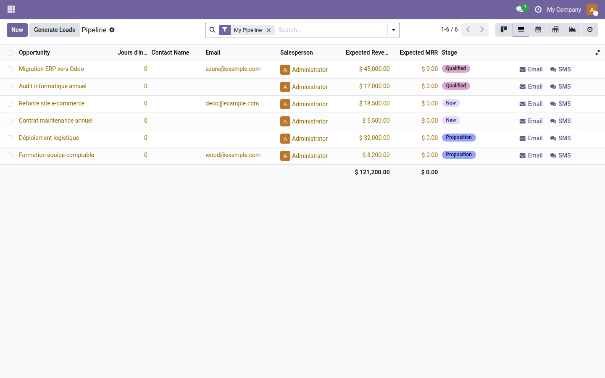
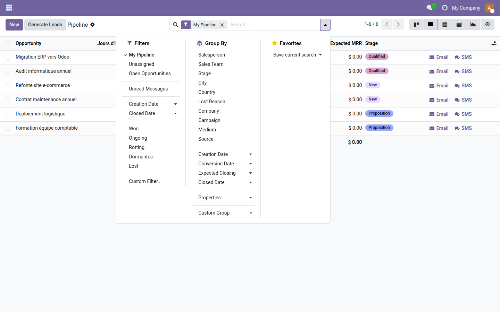

Pistes dormantes CRM
Repérez en un coup d'œil les opportunités que votre pipeline a oubliées — avant qu'elles soient définitivement perdues.
Dans un pipeline actif, les opportunités s'accumulent et certaines glissent dans l'angle mort : personne ne les touche depuis des semaines, aucun commercial ne s'en souvient. Le CRM natif d'Odoo ne signale pas cette immobilité — pas de couleur d'alerte, pas de filtre dédié, pas de compteur visible. Ces affaires dormantes représentent du chiffre d'affaires à portée de main que l'équipe commerciale ne relance tout simplement pas.
Ce que ça apporte
- 📊 Colonne « Jours d'inactivité » — affiche dans la liste du pipeline le nombre de jours écoulés depuis le dernier changement d'étape de chaque opportunité.
- ⚠️ Surlignage visuel immédiat — les lignes dormantes ressortent en orange dans la liste, repérables sans lire les chiffres.
- ⚙️ Seuil configurable dans les Réglages CRM — définissez vous-même le nombre de jours (14 par défaut) qui correspond à votre cycle de vente réel.
- 🔎 Filtre « Dormantes » en un clic — isolez instantanément toutes les affaires à relancer pour une session de suivi efficace.
- 🏷️ Badge sur la fiche de l'opportunité — un indicateur discret « Dormante depuis X j » apparaît directement sur le formulaire tant que l'affaire est en jeu.
En images
1. Surlignage et colonne « Jours d'inactivité » dans le pipeline
La liste du pipeline affiche la colonne « Jours d'inactivité » et surligne en orange toutes les opportunités qui dépassent le seuil configuré : les affaires à risque sautent aux yeux sans lire les chiffres.

2. Filtre « Dormantes » pour isoler les affaires à relancer
Le filtre « Dormantes » s'intègre dans la barre de recherche standard du CRM. Un clic isole toutes les opportunités immobiles : idéal pour organiser une routine de relance hebdomadaire.

Pourquoi l'adopter
- Aucune affaire oubliée — chaque opportunité en jeu est surveillée automatiquement, sans configuration supplémentaire après l'installation.
- Adapté à votre rythme — le seuil d'inactivité reflète votre cycle de vente, pas un paramètre générique imposé.
- Zéro friction pour l'équipe — le surlignage et la colonne sont visibles directement dans les vues existantes, sans changer les habitudes de travail.
- Gratuit et léger — dépend uniquement du module CRM standard d'Odoo, compatible Community et Enterprise.
Licence LGPL-3 — compatible Odoo 19.0. Support : support@odooskills.com.